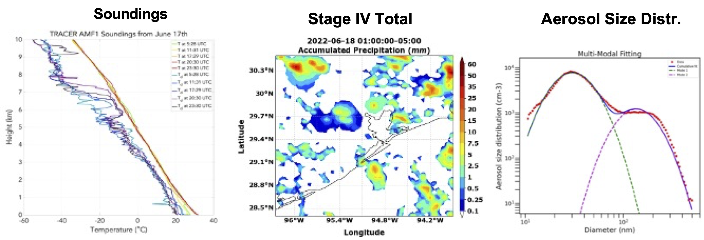

Tracking Aerosol Convection Interaction Experiment (TRACER) Model Intercomparison Project (MIP) Roadmap#
1. Introduction#
The DOE ARM Tracking Aerosol Convection Interaction Experiment (TRACER) campaign took place in the Houston, TX region from 01 October 2021 through 30 September 2022, with an IOP from June-September 2022, which collected a comprehensive data set focused on the evolution of convective clouds and their environment (including aerosol, cloud, thermodynamics, and lightning). A unique component of TRACER is that a large number of individual, isolated convective cells will be tracked and measured with high spatial and temporal resolution. These comprehensive, unique observational datasets can help evaluate model and parameterization performance, identify model and parameterization deficiencies, and gain new insights to improve models. This provides the motivation for conducting an additional community model intercomparison project (MIP) based on the previous Aerosol Cloud Precipitation Climate (ACPC) Deep Convective Cloud (DCC) MIP (ACPC-MIP; van den Heever et al. 2017; Marinescu et al. 2021; Saleeby et al. 2025; van den Heever et al. 2025), which is referred to as the TRACER-MIP.
2. Goals and Hypotheses of the TRACER-MIP#
Goals:#
Quantify the inter-model spread in representation of aerosol-convection interactions (ACI), identify model deficiencies, and measure model performance. .
Examine factors/processes leading to the model biases and large model spread, both of which were less emphasized in the previous ACPC-MIP. This effort will ultimately help reduce the ACI uncertainty.
Hypotheses:#
The different representations of condensation and ice microphysics are a major source of inter-model spread, thus, leading to the main model differences in the simulation of ACI.
The models that reproduce the observed cases and employ explicit calculation of condensation give qualitatively consistent ACI effects, particularly for the effect of ultrafine particles.
3. Approach and Cases#
The TRACER-MIP follows and builds upon the ACPC-MIP. The ACPC-MIP roadmap document can be found at this link. The TRACER-MIP has the following new features:
Extensive model evaluation against observations.
Two golden cases with varying dynamic, thermodynamic, and aerosol conditions. Ultrafine aerosol will be considered. Two tiers: prescribed and prognostic aerosols.
More detailed focus on factors/processes leading to model biases and large model spread.
Two cases were chosen to simulate from among several ‘Golden’ TRACER cases, which are June 17 and August 7, 2022 (Figures 1 and 2). Cases below were chosen since they met the following criteria:
Data available - SMPS aerosols (with ultrafine aerosols measured), soundings (5 per day), NEXRAD CAPPI, C-SAPR cell tracking.
Seabreeze present, convection observed, and cells tracked.
 Figure 1. The soundings (left), Stage IV precipitation (middle), and the pre-convective aerosol size distribution (right) measured at the TRACER main site by SMPS for the June 17 case.
The June 17 case has widespread convection, featured with an afternoon sea breeze induced thunderstorm in the Houston area (Figure 1) with a high aerosol condition (~ 4000 cm-3; > 10 nm). This case has aircraft measurements from the co-current NSF ESCAPE field campaign. The August 7 case has a morning sea breeze front and a thunderstorm in the early afternoon in the Houston area with relatively cleaner aerosol conditions (~1700 cm-3; > 10 nm).
<<<<<Fig-2
A TRACER-MIP GitHub page has been established for sharing this roadmap document as well as other documentation and updates, analysis codes, model & parameterization descriptions, etc.
4. Simulations Summary#
For each case described above, we are requesting three simulations:
Control simulation using the pre-convective aerosol profiles with the 2 aerosol modes. (See the dual modes represented in the right panels of figures 1 & 2.)
Same as control but with aerosol number concentration of each mode 3x higher.
Same as control but with aerosol number concentration of each mode 3x lower (i.e., multiple by a coefficient of 0.3).
Details of the simulation design and initialization are provided in the sections that follow.
5. Model Setup#
We ask all participants to use the following model configuration given in the table below. The nested grid domains are shown below in Figure 3. The inner domain Grid-2 is the same as the innermost nest from the ACPC-MIP. Table 1 presents model setup details. For each of the aerosol sensitivity simulations discussed below, to avoid the complications from size distribution change, we ask to keep the shape of the aerosol size distributions identical. We will solely change the initial aerosol number concentration vertical profiles by multiplying the observed surface number concentration by the coefficients (3x and ⅓ x) and generating the associated initialization vertical profiles for the sensitivity simulations. This means we are exploring the effect of aerosol number changes on clouds only. We also ask that all participants provide a file that contains a description of their model, descriptions of the parameterizations (i.e., microphysics, turbulence, land surface, etc.) used with associated references, and an overview of the output variable names and units. The table of requested output variables and units is provided in Table 2 . Please conform to this request of variables and units as much as possible.
<<<<< Fig-3
<<<<< Table-1
6. Output of Model Variables#
Table 2 describes the necessary model variables to output and the associated units. If your model writes all variables for each grid and time to an individual file, then please provide the full output files (one file per grid per time for each grid). Please also provide a separate document that outlines (1) assumptions and parameters used to define the hydrometeor and aerosol size distributions and the aerosol Tier option, (2) mass-diameter relationships and fall speed equations for each hydrometeor class (or equivalent for your model), and (3) ice category properties. Please note the details regarding the output diagnostic microphysical process rates and their units. For models to participate in the process rate analysis, these rates need to be provided in the requested units.
<<<<< Table-2